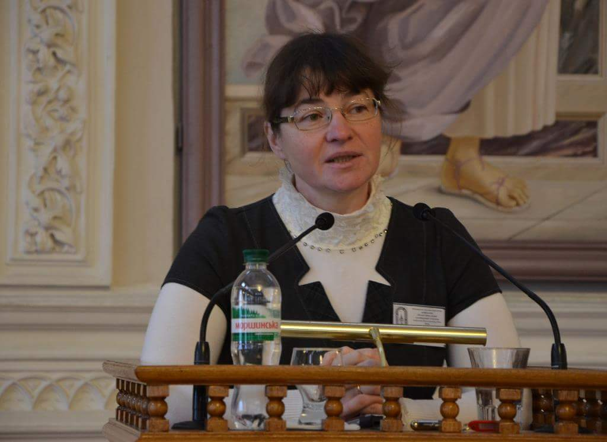
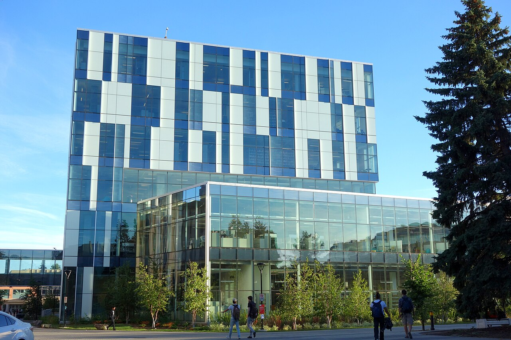
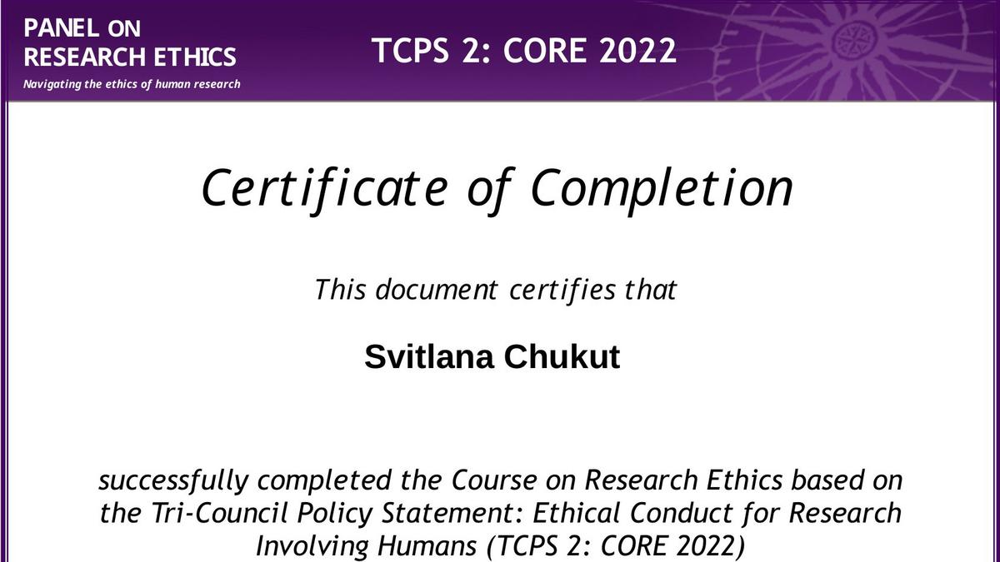
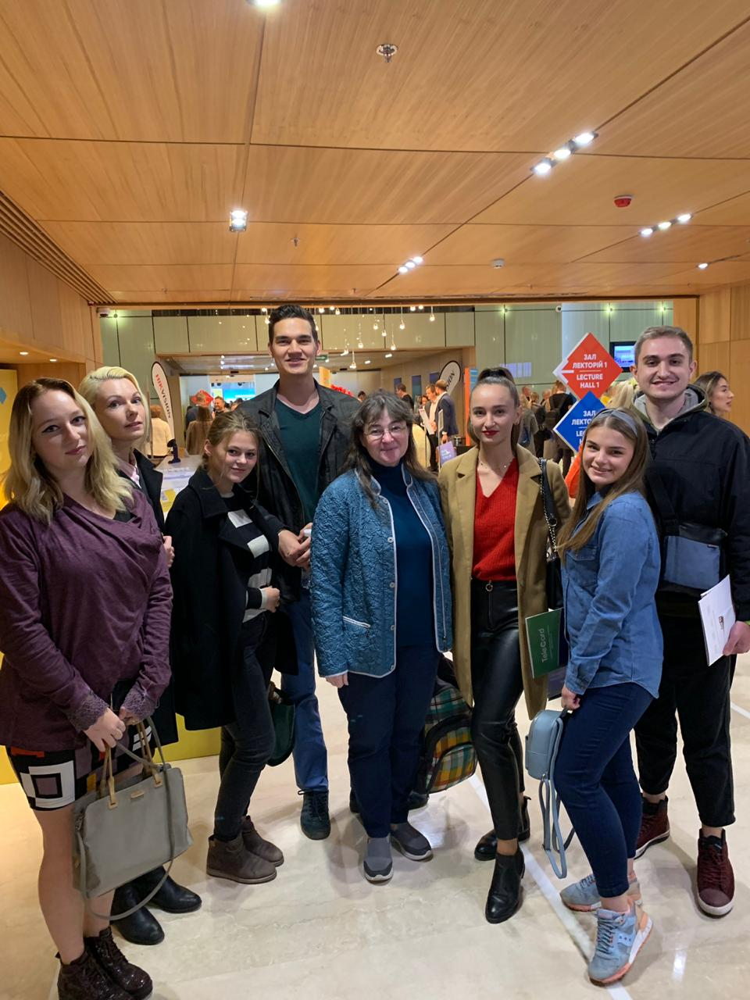
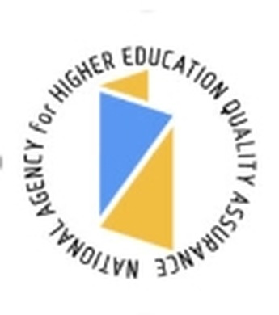
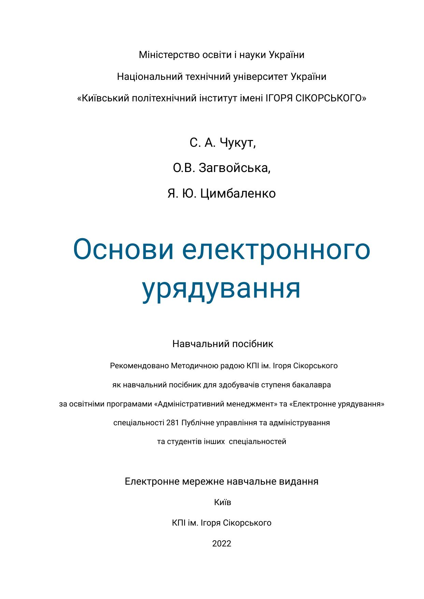
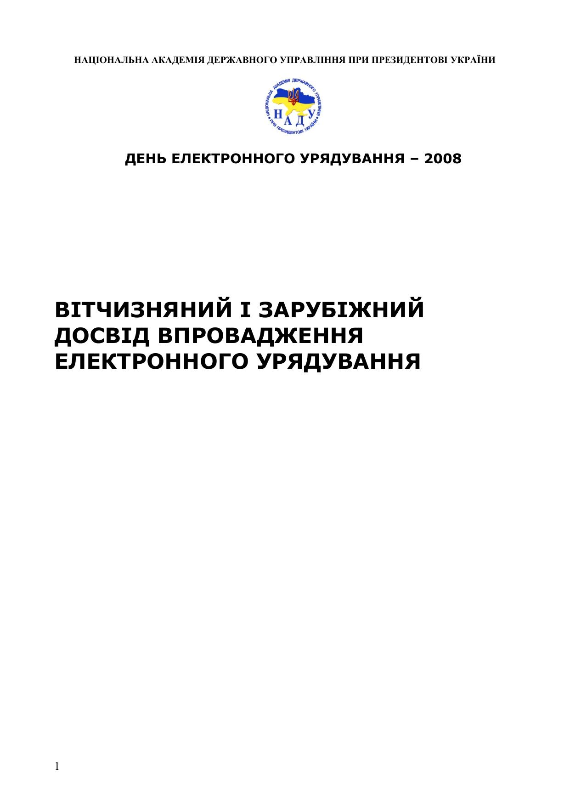
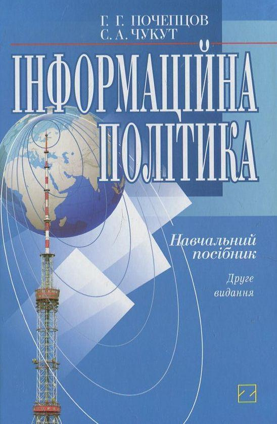
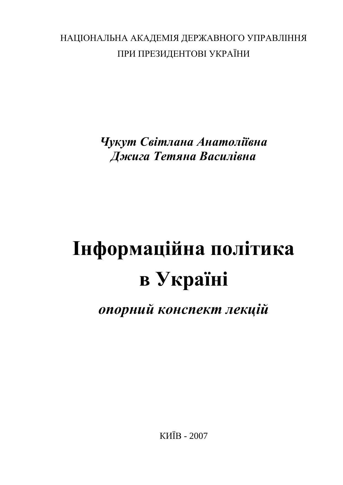

219home-quick-0992home-quick-1823page-home-0443page-home-03global-17global-18global-45global-19global-20
home-quick-01
home-quick-02
home-quick-03

home-quick-04
home-quick-05
15home-quick-06hmgoBio
home-quick-07
home-quick-08
219home-quick-09hmgoLib
home-quick-10
home-quick-11
43home-quick-12hmgoCert
home-quick-13
home-quick-14
23home-quick-15hmgoAwards
home-quick-16
home-quick-17
92home-quick-18hmgoCourses
home-quick-19
home-quick-20
26home-quick-21hmgoEvents
home-quick-22
home-quick-23
4home-quick-24hmgoEgov
home-quick-25
home-quick-26
27home-quick-27hmgoMedia
home-quick-28
home-quick-29
26home-quick-30hmgoPart
home-quick-31
home-quick-32
51home-quick-33hmgoDocs
home-quick-34
home-quick-35
8home-quick-36hmgoContacthmrKick
hmrTitle
hmqKick
hmqTexthmqCite
global-40pnBio
nHome · nBio
bipTitle
hmhDistinction
bipLead
bio-glance-01bio-glance-02bio-glance-03bio-glance-04bio-glance-05bio-glance-06bio-glance-07bio-glance-08bio-glance-09bio-glance-10
bio-statements-01
bio-statements-02
bio-statements-03
bio-statements-04
bio-statements-05
bio-statements-06
bio-statements-07
- bio-statements-08
- bio-statements-09
- bio-statements-10
bio-statements-11
bio-statements-12
bio-statements-13
bio-statements-14
- bio-statements-15
- bio-statements-16
- bio-statements-17
bis1k
bis1t
bis1p1
- bio-story-01bio-story-02
- bio-story-03
- 2013–2025bio-story-04
- bio-story-05
- 2007–2012bio-story-06
- bio-story-07
bio-story-08
bio-story-10
bio-story-12
bio-story-14
bio-story-16
bio-story-18
bio-story-20
bis2k
bis2t
bio-education-01
bio-education-02
2023
bio-education-03

bio-education-04
2000 · 2002
bio-education-05
bio-education-06
bio-education-07
1999 · bio-education-08
bio-education-09
bio-education-10
1993 · bio-education-11
bio-education-12
bio-education-13
1989 · bio-education-14
bio-education-15
bis3k
bis3t
bio-career-01
bio-career-02
bio-career-03
bio-career-04
bio-career-05
bio-career-06
bio-career-07
bio-career-08
bio-career-09
bio-career-10
bio-career-11
bio-career-12
bio-career-13
bio-career-14
bio-career-15
bio-career-16
bio-career-17
bio-career-18
bio-career-19
bio-career-20
bio-career-21
bio-career-22
bio-career-23
bio-career-24
2009–2011
bio-career-25
bio-career-26
bio-career-27
2008–2010
bio-career-28
bio-career-29
bio-career-30
bio-career-31
bio-career-32
bio-career-33
bio-career-34
bio-career-35
bio-career-36
bio-career-37
bio-awards-01
bio-awards-02
bio-awards-03
bio-awards-04
bio-awards-05bio-awards-06
bio-awards-07
bio-awards-08bio-awards-09
bio-awards-11
bio-awards-12bio-awards-13
bio-awards-14
bio-awards-15bio-awards-16
bio-awards-17
bio-awards-18bio-awards-19
bio-awards-20
bio-awards-21bio-awards-22
bio-awards-23
bio-awards-24bio-awards-25
bio-awards-26
bio-awards-27bio-awards-28
bio-awards-29
bio-awards-30bio-awards-31
bio-awards-33
bio-awards-34bio-awards-35
bio-awards-36
bio-awards-37bio-awards-38
bio-awards-40
bio-awards-41bio-awards-42
bio-awards-43
bio-awards-44bio-awards-46
bio-awards-47bio-awards-48
bio-awards-49
bio-awards-50bio-awards-51
bio-awards-52
bio-awards-53bio-awards-54
bio-awards-55
bio-awards-56bio-awards-57
bio-awards-58
bio-awards-59bio-awards-61
bio-awards-62bio-awards-63
bio-awards-64
bio-awards-65bio-awards-66
bio-awards-67
bio-awards-68bio-awards-69
bio-awards-70
bio-awards-71bio-awards-72
bio-awards-73
bio-awards-74bio-certificates-01
bio-certificates-02
bio-certificates-03
43
bio-certificates-04
bio-certificates-05
bio-certificates-06
2026 · bio-certificates-07
AI and Digital Transformation in Government
bio-certificates-08
bio-certificates-09
bio-certificates-10
Credential ID: feeb7815-8406-444e-adc5-cc97c0d5af7d
Credential ID: 262f80b2-029d-427d-a367-53ca6c70c92a
Credential ID: 938b0d9f-f4ae-436d-afcf-5bfeb995dcff
Credential ID: d56fa1c5-e04c-4627-b55d-8066242dce2b
Credential ID: 934Z8SXTAQVV
Credential ID: JD8XR7BUTM6B
Credential ID: UZGHT6SLWNC7
Credential ID: F7FFS4XZJ7ZJ
Credential ID: V3EETH9FWLB9
Credential ID: ATX2F7LAH2PN
Credential ID: RFF2UQXG47VS
Credential ID: D6YJ8QCMNVZQ
Credential ID: 74TUDPQ559A3
Credential ID: 725LSSUVGMGJ
Credential ID: 3FY5F87MF6EV
Credential ID: WGLG48P2PG2C
Credential ID: 6J38FNCS4HKD
Credential ID: 64fa8f7fbc2ce217c30cbe1d
Credential ID: 64faabcb5131864b090556ef
Certificate #0000942553
bio-certificates-46
bio-certificates-49
bio-certificates-50
2021 · bio-certificates-51
bio-certificates-52
bio-certificates-53
2019 · bio-certificates-54
bio-certificates-55
bio-certificates-56
bio-certificates-57
2017 · № 14122017-30
bio-certificates-58
bio-certificates-59
2012 · № 42281
bio-certificates-60
bio-certificates-61
2011 · bio-certificates-62
bio-certificates-63
bio-certificates-64
2001 · bio-certificates-65
bio-certificates-66
bio-certificates-67
bio-certificates-68
bio-research-01
bio-research-02
bio-research-03
bio-research-04bio-research-05bio-research-06bio-research-07bio-research-08bio-research-09bio-research-10bio-research-11bio-research-12bio-research-13bio-research-14bio-research-15bio-research-16bio-research-17
bio-research-18
- bio-research-19
- bio-research-20
- bio-research-21
- bio-research-22
- bio-research-23
- bio-research-24
- bio-research-25
- bio-research-26
bio-projects-02
bio-projects-03
bio-projects-04
2024 · GISU Research 2024
bio-projects-05
bio-projects-06
bio-projects-07
bio-projects-08
bio-projects-09
2021
bio-projects-10
bio-projects-11
bio-projects-12
bio-projects-13
bio-projects-14
bio-projects-18
bio-projects-19
bio-projects-20
bio-projects-21
bio-projects-22
bio-projects-23
bio-projects-30
bio-projects-31
bio-projects-32
bio-projects-44
2010
bio-projects-45
bio-projects-36
bio-projects-37
bio-projects-38
bio-projects-46
2007
bio-projects-47
bio-project-2006-title
2006
bio-project-2006-summary
bio-projects-39
- Digital Inclusion of Vulnerable Groups in Smart Cities (2022) — bio-projects-40
- Digital Skills / Ukrainian Forced Female Migrants in Latvia (2022) — bio-projects-41
- Digital & Educational Reintegration of Youth from De-Occupied Territories (2022) — bio-projects-42
- Digital Educational Reintegration of Youth (SDGs) (2021) — bio-projects-43
bio-supervision-01
bio-supervision-02
bio-supervision-03
- supervision-masters-stat
- 60+
- supervision-doctoral-stat
- 5
- supervision-student-stat
- 11
bio-supervision-05
supervision-doctoral-role
-
fr-audit-069
supervision-phd-degree
The dissertation examines how gender mainstreaming can improve access to digital public services and shape the transformation of Ukraine’s civil service. It combines a survey of public officials, in-depth interviews with experts, and analysis of legislation and policy documents. It traces the development of digital accessibility in Ukraine and uses the empirical findings on digital competencies to formulate recommendations for gender-responsive policy and professional development in the civil service.
supervision-dissertation-source -
fr-audit-070
supervision-candidate-degree
The dissertation develops a framework for implementing e-governance at the local level. It reviews Ukraine’s legal arrangements and compares international practices, including German coordination across levels of government and European interoperability principles. Its recommendations connect technical standards with municipal governance, including coordination among national, regional and local authorities, citizen involvement in decision-making, and urban living labs for testing services with the people who use them.
supervision-dissertation-sourcesupervision-abstract-source -
fr-audit-071
supervision-candidate-degree
The dissertation compares Poland’s government communication on European integration in 1999–2004 with Ukraine’s in 2004–2007. It examines campaign design through target audiences, messages, channels and feedback, and links the effectiveness of Poland’s campaign to the sequencing and execution of its main stages. It refines the classification of campaigns by purpose and offers recommendations for informing the Ukrainian public about European integration.
supervision-dissertation-sourcesupervision-abstract-source -
fr-audit-072
supervision-candidate-degree
The dissertation studies the formation and expression of public opinion under the influence of information flows. It proposes a theoretical model of how shared attitudes form and analyses the channels through which they are expressed, including surveys, petitions, public debate and the media. It examines how public authorities can support open expression and how regulation can address covert influence while preserving the conditions for public opinion to develop freely.
supervision-dissertation-source -
fr-audit-073
supervision-candidate-degree
The dissertation examines the policy and institutional conditions for developing Ukraine’s information society as the country pursues European integration. It reviews European approaches to coordination and legislation and considers Ukraine’s needs in telecommunications, public-sector information systems and personal data protection. Its recommendations include a state programme to encourage the use of information and communication technologies and an information and analysis centre to support national and local authorities.
supervision-abstract-source
bio-supervision-06
bio-supervision-07
supervision-kruts-summary
supervision-phd-sourcebio-supervision-04
-
fr-audit-057
The thesis examines how public authorities use mobile apps to deliver services and communicate with residents. It reviews Ukraine’s legal framework for mobile government and compares Diia and local apps with international examples. The comparison informs recommendations for improving the accessibility and quality of mobile services and making communication with residents more responsive.
supervision-masters-source -
fr-audit-058
The thesis examines how digitisation changes the way Ukraine’s National Archival Fund preserves records and makes them accessible. It covers the legal framework, the organisation of archival records, and practical decisions about equipment, software and documentation standards. Drawing on international experience, it proposes ways to improve access to digitised collections and integrate Ukrainian archives into the global information space.
supervision-masters-source -
fr-audit-059
The thesis compares Ukrainian and international uses of the Internet of Things in sectoral e-governance. It asks how data from connected devices can inform the operation of public services across sectors. Kruts’s related research provides concrete examples in healthcare and urban infrastructure, including remote monitoring, the management of health data and municipal applications of connected devices.
supervision-cohort-sourcesupervision-related-source -
fr-audit-060
The thesis looks at digital marketing as a means for public authorities to communicate with residents. Its comparative scope covers Ukrainian practices and international experience. The topic raises practical questions about selecting digital channels for different audiences, making information about public services easier to find, and creating opportunities for residents to respond to government communications.
supervision-cohort-source -
fr-audit-061
The thesis examines how public institutions can turn large datasets into information for decisions and service delivery. It reviews international and Ukrainian applications of big data, discusses methods for collecting and analysing data, and considers the privacy issues that arise when public authorities use them. The work connects analytical capacity with practical questions about institutional readiness and implementation in Ukraine.
supervision-masters-source -
fr-audit-062
The thesis asks how residents of territories temporarily outside government control can obtain Ukrainian administrative services in the context of reintegration. It reviews service delivery in Donbas, including the role of administrative service centres, and draws on Estonia’s experience with digital government. The recommendations consider how online access and electronic identification can complement in-person support where distance and movement restrictions make services harder to reach.
supervision-masters-source -
fr-audit-063
The thesis examines how digital participation tools can improve interaction between public authorities and residents. Its focus is the link between opportunities to express preferences online and the public decisions those contributions can inform. A related example from Volochai’s public work is Kyiv’s participatory budget, where residents take part in choosing proposals for municipal funding.
supervision-cohort-sourcesupervision-participation-source -
fr-audit-064
The thesis considers the government portal as a point of entry to Ukraine’s digital administration. It focuses on how a single portal can organise information from multiple public bodies and guide residents to relevant online services. Puchynets also presented on the Ukrainian government portal at the Forum of Direct Democracy, addressing its problems and opportunities for improvement.
supervision-cohort-sourcesupervision-related-talk-source -
fr-audit-065
The thesis examines how digital services can be made accessible to people who face barriers related to disability, digital skills or access to technology. It reviews Ukrainian rules and compares international approaches, including Denmark’s experience with digital services and user support. The work offers recommendations for national and local authorities on accessible design, digital literacy and support for people who need help using online services.
supervision-masters-source -
fr-audit-066
The thesis takes municipal service delivery as the starting point for comparing European e-government practices. It asks which elements of those practices may be relevant to Ukrainian municipalities and what adaptation would require at the local level. The focus is on how residents find and use public services online and how municipal authorities organise those services.
supervision-cohort-source -
fr-audit-067
The thesis analyses how Ukraine regulates public procurement and how electronic tenders change the way public spending can be scrutinised. It examines procurement rules, the rollout of ProZorro, and tools such as DoZorro for flagging and following up on concerns. The study treats competition, accountability and effective oversight as conditions for making procurement reform work.
supervision-masters-source -
fr-audit-068
The thesis studies how Ukrainian public authorities can exchange data electronically so that residents can access services that draw on information held by multiple agencies. It compares Estonia’s approach to digital identity and data exchange with Ukraine’s legal and institutional arrangements, including the early development of Trembita. The recommendations address institutional coordination, staff training and the conditions for reliable interagency exchange.
supervision-masters-source
bio-supervision-08
bio-supervision-09
-
supervision-paper-title-smart-energy
supervision-award-firstThe winning project places social inclusion at the centre of smart energy planning during wartime. It asks how digital energy infrastructure can serve groups with different needs while supporting sustainable development in Ukraine. The authors’ related publications examine how big data can inform smart grids and how cities can address barriers to inclusion. KPI records two specialist publications and three conference presentations arising from the work.
supervision-award-sourcesupervision-related-source -
supervision-paper-title-pandemic-sdgs
supervision-award-secondThe award-winning study examines how digital government can support the Sustainable Development Goals during the COVID-19 pandemic. One concrete strand of Skreminskyi’s related work compares mobile apps used internationally to help control the spread of COVID-19. That example connects the contest topic to the practical problem of maintaining a public response when face-to-face contact is restricted. KPI records three publications arising from the study.
supervision-award-sourcesupervision-related-source -
fr-audit-074
Shyts compares Ukrainian and international approaches to social inclusion in smart cities. The paper reviews the policy framework and examines how digital inequality can limit access to municipal services even as new technologies make those services easier to deliver. It recommends that municipal authorities consider who can use digital services, identify groups at risk of isolation and account for their needs when designing urban initiatives.
supervision-paper-source -
fr-audit-075
Kruts examines how connected devices and electronic medical records can support digital health services. The paper compares European practices and the use of de-identified electronic records in the United States, then reviews the development of Ukraine’s eHealth system. Its recommendations address the practical use of connected technologies alongside the protection of patient information.
supervision-paper-source -
Electronic Services as a Tool for Reintegrating Temporarily Non-Government-Controlled Territories
The authors examine how people in temporarily occupied areas of Donetsk and Luhansk could access Ukrainian administrative services. They draw on Croatia’s reintegration experience and Finland’s digital public services. The paper proposes a single digital access point for Donbas and a public information campaign to explain how residents could use the services remotely.
Read the paper (PDF) → -
Electronic Services for Vulnerable Groups: Ukrainian and International Experience
Tsiptsiura compares Ukraine’s framework for digital services with international practice and examines barriers for people who need accessible or assisted services. The paper proposes an index to assess how accessible Ukraine’s digital services are and uses the comparison to inform recommendations. The project connects digital inclusion with a practical method for evaluating public services.
Read the paper (PDF) → -
The Internet of Things in Local E-Governance
Kruts studies how connected devices can be used in municipal services and compares Ukrainian and international practice. The paper examines opportunities for automation and data analysis alongside privacy, data protection and cybersecurity risks. It offers implementation recommendations for Ukrainian public authorities, including municipal administrations.
Read the paper (PDF) → -
fr-audit-076
Feshchenko compares smart-city initiatives in Singapore, Amsterdam and Chicago and examines Kyiv’s early smart-city programme in light of those examples. The paper looks at how open data, connected devices and urban living labs can support municipal services and the testing of new approaches. It identifies practices Ukrainian cities could adapt to their own institutional and regulatory circumstances.
supervision-paper-source -
fr-audit-077
Pashchak and Plotnikova examine how Chile and Belgium organised digital public services. Chile’s Trámite Fácil portal and digital support for start-ups illustrate ways to make administrative procedures easier to find and use. Belgium’s federal portal and electronic ID provide examples of service access and authentication. The authors consider how elements of these approaches could be adapted to Ukraine’s emerging e-governance system.
supervision-paper-source -
fr-audit-078
Kuts examines how moving tenders online can help detect corruption risks in public procurement. The study reviews the stages of a tender and compares international e-procurement experience before analysing Ukraine’s ProZorro system. It explains how public tender information, risk indicators and DoZorro monitoring support scrutiny, and discusses oversight practices that can turn flagged issues into follow-up.
supervision-paper-source -
fr-audit-079
Prylepko’s competition presentation uses Estonia’s electronic ID and X-Road data exchange as examples of the infrastructure needed for integrated public services. It describes how Ukraine began adapting the Estonian approach through Trembita and illustrates its early use in land-lease registration. Recommendations cover public communication, funding and training for officials who implement interagency services.
supervision-slides-source -
fr-audit-080
Konashevska and Kyseliova compare Japan’s and New Zealand’s approaches to e-democracy. They examine ways people can access parliamentary information and communicate with public institutions, including New Zealand’s parliamentary portal. The authors compare those examples with Ukraine’s tools for electronic participation and consider how institutional websites can support public feedback and dialogue.
supervision-paper-source -
fr-audit-081
Poliarna and Riabets compare digital police services in European countries, including the United Kingdom, Sweden and Denmark, with the services available in Ukraine at the time. The paper examines how police websites provide information and let residents complete routine procedures online. It identifies ways Ukrainian police agencies could improve access to information and broaden the range of services available digitally.
supervision-paper-source
bis6k
bis6t
bio-expertise-01
bix1f
bix1t
bix1d
bix2f
bix2t
bix2d
bix3f
bix3t
bix3d
bix4f
bix4t
bix4d
bix5f
bix5t
bix5d
bix6f
bix6t
bix6d
bio-expertise-26
bio-expertise-27
bio-expertise-28
bio-expertise-29
bio-expertise-30
bio-expertise-31
bio-expertise-32
bio-expertise-33
bio-expertise-34
bio-expertise-35
bio-expertise-36
bio-expertise-37
bio-expertise-38
bio-expertise-39
bio-expertise-40
bio-expertise-41
bio-expertise-42
bio-expertise-43
bio-expertise-44
bio-expertise-45
bio-expertise-46
bio-expertise-02
bio-expertise-03
bio-expertise-04
bio-expertise-05
bio-expertise-06
bio-expertise-07
bio-expertise-08
bio-expertise-09
bio-expertise-10
bio-expertise-11
bio-expertise-12
bio-expertise-13
bio-expertise-14
bio-expertise-15
bio-expertise-16
bio-expertise-17
bio-expertise-18
bio-expertise-19
bio-expertise-20
bio-expertise-21
bio-expertise-22
bio-expertise-23
bio-expertise-24
bio-expertise-25
bio-editorial-01
bio-editorial-02
From 2001 to 2024, her service included grant and dissertation assessment, journal leadership, manuscript peer review, and membership on academic councils and government working groups.
Research funding review
Grant proposal reviewer, National Research Foundation of Ukraine
Conducted expert reviews of two research proposals submitted to a competitive funding call of the National Research Foundation of Ukraine.
Grant proposal reviewer, National Research Foundation of Ukraine
Reviewed proposals submitted to a competitive funding call of the National Research Foundation of Ukraine on infodemics, online community management during COVID-19, and postgraduate teacher education under unpredictable conditions.
Research proposal reviewer, Ministry of Education and Science of Ukraine
2019–2022
Conducted expert reviews of research proposals submitted for funding from the Ministry.
Editorial roles and manuscript peer review
Peer reviewer, Journal of Information Policy
Reviewed a manuscript on information and communication technologies in governance and e-governance initiatives in India.
Manuscript reviewer
Reviewed a study on the Unified Professional Entrance Test, regulatory influence and the effectiveness of educational services.
Editorial board member, “Democratic Governance”
2008–2012
Served on the editorial board of Democratic Governance (Демократичне врядування), an electronic scholarly journal.
Editorial board member, publications of the National Academy of Public Administration under the President of Ukraine
2006–2012
Served on the editorial boards of the Bulletin (Вісник) and the Collection of Scientific Works (Збірник наукових праць) of the National Academy of Public Administration under the President of Ukraine.
Editorial board member, “Strategic Priorities”
2010–2011
Editorial board of the journal “Strategic Priorities”.
Editor-in-Chief, journal “E-Governance”
2009–2011
Led the specialised journal devoted to e-governance.
Dissertation assessment and academic councils
Dissertation reviewer, Public Administration
2001–2022
Conducted expert assessments on multiple occasions of dissertations submitted for Doctor of Sciences and Candidate of Sciences degrees in Public Administration.
Member, Specialised Academic Council D 26.891.02
2019–2021
Served on the council for Doctor of Sciences and Candidate of Sciences dissertation defences in Public Governance and Administration at the Institute for Personnel Training of the State Employment Service of Ukraine.
Member, Specialised Academic Council D 26.810.02
2009–2011
Served on the dissertation defence council at the National Academy of Public Administration under the President of Ukraine in the field of Public Administration, specialty 25.00.02, Mechanisms of Public Administration.
Member, Scientific and Methodological Council
2008–2012
Served on the Scientific and Methodological Council of the Ministry of Education and Science of Ukraine in the field of Public Administration.
Government working groups
Member, interagency working group of the National Security and Defence Council of Ukraine
2009–2011
Helped draft the procedure governing implementation of the Council’s decisions by the Cabinet of Ministers of Ukraine.
Member, working group of the Secretariat of the President of Ukraine
2008–2009
Contributed to the design, implementation, and operation of an information system on the activities of local state administrations.
bio-volunteering-01
bio-volunteering-02
bio-volunteering-03
bio-volunteering-05
bio-volunteering-06bio-volunteering-07
bio-volunteering-08
bio-volunteering-09bio-volunteering-10

bio-volunteering-11
bio-volunteering-12bio-volunteering-13

bio-volunteering-14
bio-volunteering-15bio-volunteering-16
bio-collaboration-01
bio-collaboration-02
bio-collaboration-03
2009–2010
bio-collaboration-04
bio-collaboration-05
bio-collaboration-06
bio-collaboration-07
bio-collaboration-08
Arvo Ott · Yuri Misnikov · eGovernance Academy
04.2010 bio-collaboration-0908.12.2010 bio-collaboration-10
bio-collaboration-11
bio-collaboration-12
bio-skills-01
bio-skills-02
bio-skills-03
bio-skills-04
Public Administration ★Public Services ★bio-skills-05bio-skills-06bio-skills-07bio-skills-08bio-skills-09bio-skills-10bio-skills-11bio-skills-12
bio-skills-13
bio-skills-14
Artificial Intelligence (AI)Generative AI ToolsPrompt EngineeringBig Databio-skills-15
bio-skills-16
bio-skills-17bio-skills-18bio-skills-19
bio-skills-20
bio-skills-21bio-skills-22bio-skills-23bio-skills-24bio-skills-25bio-skills-26
bio-skills-27
Brightspace (D2L)MoodleH5PMicrosoft OfficeMicrosoft ExcelGoogle WorkspaceChatGPTMicrosoft CopilotClaudeGeminibio-skills-28bio-skills-29bio-skills-30bio-skills-31
bio-skills-32
bio-skills-33
bio-recommendations-01
bio-recommendations-02
bio-recommendations-label
Oleksandr Poprotskyy
bio-recommendations-21
bio-recommendations-label
Jennifer Sommer
bio-recommendations-04
bio-recommendations-label
bio-recommendations-05
bio-recommendations-06
bio-recommendations-07
bis7k
bis7t
bis7d
bio-legacy-01
bif10t
bif10d
bio-legacy-02
bif11t
bif11d
bif8y
bif8t
bif8d
2015–2020
bif9t
bif9d
2013–2015
bif4t
bif4d
bif2y
bif2t
bif2d
2007–2011
bif6t
bif6d
bif5y
bif5t
bif5d
bif1y
bif1t
bif1d
bio-legacy-03
bif3t
bif3d
bio-legacy-04
bif7t
bif7d
global-40pnLib
nHome · nLib
lipTitle
lipLead
lib-pointer-01 lib-pointer-02
219home-quick-09global-17global-18global-45global-19
lib-book-01
lib-book-02
lib-book-03




book-group-volumes
book-group-guides
book-group-chapters
Google Scholar
lib-catalogue-01 ↗
lib-catalogue-02
lib-catalogue-03global-45
lib-catalogue-04
lib-catalogue-05
lib-catalogue-06
libReferenceNote
lib-catalogue-07lib-catalogue-08
global-40pnCourses
nHome · nCourses
copTitle
copLead
courses-pointer-01 courses-pointer-02
92home-quick-1850courses-gbc-01
courses-public-01
courses-public-02
courses-kpi-01
courses-kpi-02
courses-kpi-03
KPI’s 2022 university-wide undergraduate catalogue lists 35 elective entries, including these two courses. In June 2022, KPI reported 2,562 distance-learning courses on its Sikorsky platform. The number of courses evaluated in the survey remains unverified.
courses-kpi-24
courses-kpi-41
courses-kpi-46
courseProgram
- courses-kpi-47
- courses-kpi-48
- courses-kpi-49
- courses-kpi-50
- courses-kpi-51
courses-kpi-107
courses-kpi-129
courses-kpi-37
courses-kpi-76
courses-kpi-28
courses-kpi-111
courses-kpi-86
courses-kpi-81
courses-kpi-103
courses-kpi-125
courses-kpi-56
courses-kpi-20
9th place among the top ten courses The results of the 2022 university-wide student survey on satisfaction with course content and teaching quality were announced at a meeting of the Methodological Council of the National Technical University of Ukraine “Igor Sikorsky Kyiv Polytechnic Institute”.
courses-kpi-71
courses-kpi-121
courses-kpi-91
courses-kpi-95
courses-kpi-61
courses-kpi-12
8th place among the top ten courses The results of the 2022 university-wide student survey on satisfaction with course content and teaching quality were announced at a meeting of the Methodological Council of the National Technical University of Ukraine “Igor Sikorsky Kyiv Polytechnic Institute”.
courses-kpi-08
courses-kpi-66
courses-kpi-99
courses-napa-01
courses-napa-02
courses-napa-03
courses-napa-04
napa-catalogue-note
napa-information-ukraine-title
napa-information-ukraine-desc
napa-state-information-title
napa-state-information-desc
napa-information-society-title
napa-information-society-desc
napa-information-egov-title
napa-information-egov-desc
napa-public-relations-title
napa-public-relations-desc
napa-digital-city-title
napa-digital-city-desc
napa-electronic-government-title
napa-electronic-government-desc
napa-policy-egov-title
napa-policy-egov-desc
napa-policy-pr-title
napa-policy-pr-desc
napa-e-governance-title
napa-e-governance-desc
napa-e-democracy-title
napa-e-democracy-desc
napa-public-communication-title
napa-public-communication-desc
courses-napa-06
courses-napa-24
courses-napa-28
napa-egov-foundations-title
napa-egov-foundations-desc
napa-egov-law-title
napa-egov-law-desc
napa-egov-module-title
napa-egov-module-desc
courses-napa-08
coc2d
courseProgram
- coc2p1
- coc2p2
- coc2p3
- coc2p4
napa-information-ukraine-title
napa-distance-ukraine
courses-napa-10
courses-napa-11
courses-napa-12
napa-training-state-policy
courses-napa-13
napa-training-ukraine-implementation
courses-napa-14
napa-training-international-experience
courses-napa-15
napa-training-public-interaction
courses-napa-16
napa-training-reengineering
courses-napa-17
napa-training-websites
courses-napa-18
napa-training-regional-implementation
courses-napa-19
courses-napa-20
courses-medical-01
courses-medical-02
courses-medical-03
1993–1996
courses-medical-04
courses-medical-05
courses-medical-08
- courses-medical-09
- courses-medical-10
- courses-medical-11
- courses-medical-12
- courses-medical-13
courses-teaching-01
courses-teaching-02
courses-teaching-03
courses-teaching-04
- courses-teaching-05
- courses-teaching-06
- courses-teaching-07
- courses-teaching-08
- courses-teaching-34
courses-teaching-09
courses-teaching-10
courses-teaching-11
courses-teaching-12
2016
courses-teaching-13
courses-teaching-14
2016
courses-teaching-15
courses-teaching-16
2016
courses-teaching-17
courses-teaching-18
2015
courses-teaching-19
courses-teaching-20
courses-teaching-36
courses-teaching-22
courses-teaching-23
2019–2025
courses-teaching-24
courses-teaching-25
2019–2021
courses-teaching-26
courses-teaching-27
2022
courses-teaching-28
courses-teaching-29
2019–2025
courses-teaching-30
courses-teaching-31
courses-teaching-32
courses-teaching-33
courses-teaching-35
courses-george-brown-01
courses-george-brown-02
courses-george-brown-03
George Brown Polytechnic · Toronto, Canada
courses-gbc-01
courses-gbc-02
courses-gbc-03
courses-gbc-04
courses-gbc-05
- courses-gbc-06
- courses-gbc-07
- courses-gbc-08
- courses-gbc-09
- courses-gbc-10
- courses-gbc-11
- courses-gbc-12
courses-gbc-13
courses-gbc-14
courses-gbc-15
Entrepreneurship in Construction
gbc-grp-14d
courses-gbc-227
courses-gbc-228
- 1. Introduction
- 2. Overview of Estimating and Bidding in Construction
- 3. Analyzing Bid Documents
- 4. Developing a Competitive Bid
- 5. Final Project: Comprehensive Bid Proposal
courses-gbc-229
Creating an engaging and interactive H5P branching simulation game for developing a comprehensive bid proposal involves using multiple H5P content types to simulate real-world scenarios and decision-making processes. H5P Branching Simulation Game: Comprehensive Bid Proposal; Drag and Drop Activity on Preparing Cost Estimates; Interactive…
courses-gbc-230
H5P Branching Scenarios: 1. Prepare a Detailed Cost Estimate for a Construction Project; 2. Estimating and Bidding Fundamentals; 3. Supporting Competitive Tendering Processes; 4. Drafting a Project Scope and Specifications; 5. Defining Evaluation Criteria and Weightings; 6. The Construction Bid Challenge; Drag-and-Drop Activities for…
Entrepreneurship in Hospitality
gbc-grp-08d
courses-gbc-106
courses-gbc-107
1.1. Introduction 1.2. Understanding Market Trends in the Hospitality Sector 1.3 Using SWOT and PESTLE to Evaluate Opportunities 1.4 Spotting Gaps in the Market 1.5 Evaluating Concept Feasibility
courses-gbc-109
courses-gbc-110
2.1. Introduction 2.2 Why Business Planning Matters 2.3 Key Components of a Hospitality-Focused Business Plan: Executive Summary 2.4. Key Components of a Hospitality-Focused Business Plan: Business Description 2.5. Key Components of a Hospitality-Focused Business Plan: Market Research & Analysis 2.6. Key Components of a Hospitality-Focused Business Plan: Operations Plan 2.7…
courses-gbc-112
courses-gbc-113
3.1. Introduction 3.2 The Importance of Financial Feasibility 3.3 Startup Cost Estimation 3.4 Basic Financial Statements 3.5 Break-Even Analysis 3.6. Forecasting Sales and Expenses 3.7. KPIs for Hospitality Ventures 3.8. Funding Strategies + Investor Readiness
courses-gbc-115
courses-gbc-116
4.1. Introduction 4.2. Why Marketing Matters in F&B Startups 4.3 From the 4Ps to a Marketing Strategy & Plan 4.4. Creating a Brand Identity 4.5. Essentials of Digital Marketing 4.6. Measuring Marketing Success
Food and Beverage Cost Control
gbc-grp-07d
courses-gbc-94
courses-gbc-95
1.1.Introduction 1.2 Cost Control 1.3 Performing Cost-to-Sales Ratio Calculations 1.4 Interpreting Trends and Variances 1.5 Cost-Volume-Profit (CVP) Relationships
courses-gbc-97
courses-gbc-98
2.1. Introduction 2.2 Introduction to the Purchasing Cycle 2.3 Supplier Selection and Order Management 2.4 Receiving Procedures – Accuracy and Fraud Prevention 2.5 Storage and Issuing – Cost, Waste, and Security 2.6 Inventory Management and Stock Rotation (FIFO, LIFO) 2.7 Reducing Waste and Loss – Operational Impacts on Profitability
courses-gbc-99
courses-gbc-100
3.1. Introduction 3.2. Introduction to Portion Control – Definition, Purpose, and Standards 3.3. Methods and Tools for Effective Portion Control 3.4. Calculating Standard Food and Beverage Costs 3.5. Calculating Actual Food and Beverage Costs 3.6. Identifying Cost Variances and Their Causes 3.7. Implementing Corrective Actions Based on Cost Variance Analysis
courses-gbc-102
courses-gbc-103
4.1. Introduction 4.2. Introduction to Labour Cost Control 4.3. Types of Labour Costs 4.4. Labour Productivity Metrics 4.5. Scheduling Techniques and Legal Compliance 4.6. Forecasting Labour Needs 4.7. Technology in Labour Management
courses-gbc-104
Module 4 Final Assessment – Labour Cost Controls & Key Determinants Option 2. Version 1. Final Assessment Simulation Game – Module 4: Labour Cost Controls & Key Determinants Scenario Title: Harbourview Café: The Labour Efficiency Challenge Format: H5P Branching Scenario (Auto-Graded Simulation Option 2. Version 2. Module 4 Final…
Front Office Operations
gbc-grp-04d
courses-gbc-51
courses-gbc-52
1.1. Introduction 1.2 The Front Desk Control Tower 1.3. Guests as operational drivers (what guests do shapes what the desk must do) 1.4. Communication channels between departments (the hotel’s “information network”) 1.5. Information continuity: logs, handovers, and “no repeat questions” operations
courses-gbc-53
Option 1. Version 1. Title: Module 1 Final Assessment – Incident Control Package + MOD Brief : Title (LMS): Module 1 Final Assessment – System Outage Check-In Crisis (Resorts World Las Vegas, Feb 2025)Option 1. Version 2. Title: Module 1 Final Assessment – Arrival Control Tower Package + Supervisor Brief (Harbourview Hotel) Option 2…
courses-gbc-54
H5P Drag & Drop - “Roles → Decisions (Front Office Control Tower); Multiple Choice (Scenario decisions); Fill in the Blanks (Operational language + lens);
courses-gbc-56
courses-gbc-57
2.1 Introduction 2.2. The Guest Cycle Map (front desk version) 2.3. Pre-arrival Phase: Reservations + Readiness (Front Desk Focus) 2.4. Arrival Phase: Check-in as an Operational Handoff (Front Desk Focus) 2.5. Occupancy / In-House Phase: Maintaining Stay Stability (Front Desk Focus) 2.6. Departure Phase: Check-out + Settlement + Room Release (Front Desk Focus) 2.7 Post-stay…
courses-gbc-58
Option 1. Version 1. Title: Module 2 Final Assessment – Guest Cycle Continuity Package + MOD Brief (Harbourview Hotel) Option 1. Version 2. Module 2 Final Assessment – Guest Cycle Control Case File: “Harbourview Under Pressure” (Manual-Graded) Option 2. Version 1: Module 2 Final Assessment (H5P Auto-grade Simulation): “Harbourview Hotel…
courses-gbc-59
Scenario Snapshots; Drag & Drop (Ordering)
courses-gbc-61
courses-gbc-62
3.1 Introduction 3.2 Service recovery as an operating system 3.3. De-escalation: Communication that keeps the guest calm and the team aligned 3.4 Recovery decision-making: choosing the right fix, the right level, and the right time 3.5 Documentation, Compensation Logic, and Escalation Authority
courses-gbc-63
Option 1. Version 1. Title: Module 3 Final Assessment: Service Recovery and Problem Resolution: Harbourview Hotel (Toronto) Integrated Case; Option 1. Version 2. Module 3 Final Assessment – (Real-World Incidents) Harbourview Hotel: Systems Down + Overbooking + Cyber Disruption; Option 1. Version 3. Module 3 Final Assessment – Integrated…
courses-gbc-65
courses-gbc-66
4.1. Introduction 4.2. Canada-Focused Front Office Technology Stack + Universal PMS Language 4.3 OPERA Cloud Billing & Dispute Resolution: Posting, Correcting, Verifying (Transaction Accuracy) 4.4. Interpreting the Folio: What Guests See vs What Staff Know 4.5. Coordinating with Other Departments: Turning Transactions into Seamless Guest Service (OPERA Cloud)
courses-gbc-67
Module 4 Final Assessment: Front Office Software & Enhancing Guest Services Option 1 – Version 1: Real-World Billing Incidents (OPERA Cloud) Option 1. Version 2. Module 4 Final Assessment – (Real-World Incidents) Harbourview Hotel (Toronto): Interface Lag + Payment Disruptions + Direct Bill Pressure (OPERA Cloud) Option 1. Version 3…
Global Accommodations
gbc-grp-11d
courses-gbc-148
courses-gbc-149
1.1. Introduction 1.2. Overview of the Hospitality and Accommodations Sector 1.3. Historical Development of Lodging Worldwide 1.4. Accommodation Categories: Hotels, Resorts, Hostels, Airbnb, etc. 1.5. Current Trends in the Global Hospitality Market 1.6. Final Assessment
courses-gbc-150
courses-gbc-151
2.1. Introduction 2.2. The Role of Global Brands in the Hospitality Industry 2.3. Criteria for Assessing Brand Strength and Reputation 2.4. Case Studies: Successful Global Hospitality Brands 2.5. Final Assessment
courses-gbc-154
courses-gbc-155
3.1. Introduction 3.2. Rooms Division: Resources, Roles, and Responsibility 3.3. Food and Beverage Division: Resources, Roles, and Responsibility 3.4. Support Division in Hospitality 3.5. Final Assessment: Aligning Roles with Career Opportunities
courses-gbc-156
Final Assessment: Aligning Roles with Career Opportunities As we conclude this module, it’s time to put your knowledge into practice and reflect on the diverse career opportunities within the accommodations industry. This final assessment is designed to help you connect your personal interests, skills, and career aspirations with…
courses-gbc-157
Simulations: Handling an Overbooking Situation; Handling a Guest Noise Complaint; Resolving a Front Desk Conflict Between Staff; Managing a Late Check-In; Handling a Guest’s Special Request; Managing a Double-Booking Situation; Assisting a Guest with a Special Request; Dealing with a Difficult Guest Request; Handling a Guest Room…
courses-gbc-158
courses-gbc-159
4.1. Introduction 4.2. The Employment Cycle in Accommodations 4.3 Leveraging the employment cycle for career growth in accommodations 4.4. Transitioning Up and Sideways in Hospitality Careers 4.5. Final Assessment
courses-gbc-161
courses-gbc-162
5.1. Introduction 5.2. Reservation and Property Management Systems (PMS) 5.3. Guest-Focused Technologies 5.4. Data Analytics in Accommodation Management 5.5. Final Assessment
courses-gbc-165
courses-gbc-166
6.1. Introduction 6.2. Certification Systems in Hospitality: Elevating Standards for Sustainability, Safety, and Service 6.3. Sustainable Resource Management in Accommodations: Energy, Water, and Waste Solutions 6.4. Innovations in Accommodation Models 6.5. Final Assessment
courses-gbc-167
Gamified Final Assessment: “Sustainability Quest: Save the Future of Hospitality”
courses-gbc-168
H5P Branching Scenarios:1. Leading Sustainability at a Global Brand Hotel; 2.Designing a Sustainable Water Strategy; 3. Building a Waste-to-Wealth Strategy; 4. Designing an Urban Capsule Hotel; 5. Designing a Floating Eco-Resort; Simulations: Retrofitting for Sustainability – A Hotel Transformation Challenge; Mini Energy Audit – A…
courses-gbc-171
courses-gbc-172
7.1. Introduction 7.2. Cultural Sensitivity in Hospitality 7.3. Adapting Services to Diverse Guests 7.4. Case Studies: Unique Cultural Practices in Lodging 7.5. Final Assessment
courses-gbc-173
Final Gamified Assessment: Personalization Power-Up – A Frontline Challenge Objective: Identify missed personalization opportunities and recommend culturally sensitive solutions to improve frontline service.
courses-gbc-174
H5P Branching Scenarios: 1. Etiquette Explorer – Navigating Global Hospitality; 2. Simulation: Cultural Missteps in Action; 3. Global Guest Interactions: Communication Challenge; Branching Scenario Game: Designing the Perfect Safari Lodge Experience; Auto-Graded Role-Play Simulation: 1. Ryokan Cultural Experience; 2. Aman Cultural…
Housekeeping and Facilities Management
gbc-grp-02d
courses-gbc-27
courses-gbc-28
1.1. Introduction 1.2 Hotel Asset Management Basics 1.3 Housekeeping as Asset Steward 1.4 Engineering as Asset Steward
courses-gbc-29
Module 1 Final Assessment Asset Stewardship Readiness Brief: Housekeeping + Engineering in Action Option 2. Final Assessment – Module 1 Auto-graded Gamified Simulation (H5P) “Harbourview Hotel: Operate as Asset Stewards” (HK + ENG Control Tower)
courses-gbc-31
courses-gbc-32
2.1. Introduction 2.2 The Triple Bottom Line “Compass” (Housekeeping/Engineering version) 2.3 People Pillar: Safety, Workload, and Training (Housekeeping/Engineering) 2.4 Planet Pillar: Water, Energy, Waste, and Chemicals (HK/ENG) 2.5 Profit Pillar: Analyzing Housekeeping Financial Results
courses-gbc-33
Module 2 Final Assessment: Version 1: TBL Stabilization Package + HK Month-End Variance Brief (Harbourview + Lakeshore) Module 2 Final Assessment: Version 2: TBL Decision + Housekeeping Financial Results Analysis (Harbourview Hotel) Option 2. Final Assessment: Module 2 - Auto-graded Final Assessment Setup (recommended) Tool: H5P Question…
courses-gbc-35
courses-gbc-36
3.1. Introduction 3.2 Green initiatives landscape 3.3 Leadership in Energy and Environmental Design for Building Operations and Maintenance for Hospitality 3.4 International Organization for Standardization 14001 environmental management system 3.5 Eco-label programs in hotels
courses-gbc-37
Module 3 Final Assessment: Case Study: Harbourfront Hotel (Toronto) - “Proof-Ready Green Initiative” Option 2. H5P Final Assessment (Auto-graded + Gamified): Recommended H5P container H5P Content Type: Branching Scenario Title: Harbourfront Hotel: Sustainability Proof Challenge
Human Resources Management for Hospitality
gbc-grp-10d
courses-gbc-131
courses-gbc-132
1.1. Introduction 1.2. Human Resource Challenges Facing Organizations 1.3. Steps in Strategic Human Resource Management (SHRM) 1.4. Discrimination and Harassment 1.5. Bona Fide Occupational Qualification (BFOQ) 1.6. Duty to Accommodate 1.7. Final Assessment – “HR Mission: Hotel Harmony”
courses-gbc-133
Auto-graded Final Assessment – “HR Mission: Hotel Harmony”: You are the new HR Manager at Hotel Harmony, a 120-room international hotel preparing for peak season. The General Manager has asked you to lead several urgent HR improvements. Your performance will be scored based on the quality of your decisions across five mission areas…
courses-gbc-134
Case Studies Overview: 1. AHLA Workforce Recovery Initiative (USA, 2023–2025); Case Studies: 1. Vail Resorts – Managing Seasonal Staffing Shortages; 2. Hilton Worldwide – Embracing Generational and Cultural Diversity; 3. Accor Hotels – Accommodating a Visually Impaired Employee; Case Analysis Quiz: Marriott Harassment Lawsuit (2018)…
courses-gbc-137
courses-gbc-138
2.1. Introduction 2.2. Job Descriptions and Recruitment 2.3. How to Attract Candidates 2.4. Onboarding and Training 2.5. Final Assessment
courses-gbc-139
H5P Branching Scenarios: Recruitment Hero Quest – Global Talent Challenge; Recruitment Relay – The Global Hiring Sprint; Final Assessment (Instructor-Graded): Case Study Analysis – Talent Strategy at Ocean Breeze Hotels
courses-gbc-140
H5P Branching Scenario Activities: 1. Evaluating with STAR Method; Matching: 1. Components of a Job Description Instructions; 2. Build a 3-Day Onboarding Plan; Scenario-Based Decision – Marriott Recruitment Strategy Scenario; Case Studies: 1. Marriott International – Streamlining Recruitment with Role Profiles; 2. Hilton’s ‘Onboarding…
courses-gbc-143
courses-gbc-144
3.1. Introduction 3.2. The Value and Steps of Performance Management in Global Hospitality 3.3. Ethical Guidelines for Performance Management 3.4. The Strategic Role of Employee Benefits 3.5. Types of Employee-Specific Benefits 3.6. Assessing Total Rewards Packages to Improve Human Resources Strategy 3.7. The Steps in the Labour Relations Process 3.8. Final Assessment
courses-gbc-145
Manager at a luxury hotel, you'll face real-world performance challenges involving ethical decisions, development planning, and strategic benefits. This branching activity tests your ability to apply course concepts in a practical, decision-making context. Through this simulation, you'll refine your judgment and leadership skills…
courses-gbc-146
Case Study Analysis: 1. Marriott International; 2. Four Seasons Hotels – Upholding Ethics in Performance Evaluations; 3. Accor Hotels – Strategic Benefits Driving Engagement; Drag-and-Drop Matching Game; H5P Drag-and-Drop: Global Benefits Plan Design; H5P Branching Scenarios: 1. Designing Inclusive Benefits in a Global Resort Setting; 2…
Introduction to Hospitality Law
gbc-grp-09d
courses-gbc-118
courses-gbc-119
1.1. Introduction 1.2 Introduction to Tort Law in Hospitality 1.3. Negligence: Elements and Impacts in Hospitality Settings 1.4. Vicarious Liability in Hotel and Restaurant Environments 1.5. Strategies for Reducing Legal Risk in Hospitality 1.6. Basics of Contract Law in Hospitality 1.7 Breach of Contract and Available Remedies
courses-gbc-121
courses-gbc-122
2.1. Introduction 2.2. International Standards and Licensing Requirements for Lodging 2.3. Accommodation-Specific Liability and Duty of Care 2.4. Guest Rights: Non-Discrimination and Access 2.5. Privacy and Data Protection in Hotels
courses-gbc-124
courses-gbc-125
3.1. Introduction 3.2 International Food Safety Standards and Certifications 3.3 Licensing and Regulation of Alcohol Sales 3.4 Foodborne Illness and Legal Liability 3.5 Labeling, Allergen Declarations, and Consumer Transparency
courses-gbc-127
courses-gbc-128
4.1 Introduction 4.2 The Innkeeper–Guest Relationship 4.3. Liability for Premises Safety and Guest Property 4.4. Trespassers, Unauthorized Visitors, and Overstays 4.5. Eviction and Guest Removal 4.6 Surveillance, Privacy and Data Handling 4.7 Hotel Liability for Lost, Stolen, or Damaged Guest Property 4.8. Legal Responsibilities in Emergencies & Crisis Scenarios
Managerial Accounting
gbc-grp-06d
courses-gbc-81
courses-gbc-82
1.1. Introduction 1.2. Understanding Multi-Department Operations 1.3. Cost Allocation in Multi-Department Operations 1.4. Revenue Mix and Profit Variance Analysis 1.5. Comparative and Common-Size Financial Statements
courses-gbc-83
Option 1. Title: Module 1 Final Assessment – Comparative & Common-Size Analysis and Revenue Mix Option 2. Version 1: Final Assessment – Final Auto-Graded Simulation – Module 1 Title (LMS): Simulation Final Assessment – Multi-Department Profitability at Harbourview Hotel Option 2. Version 2: Final Assessment – H5P Branching Scenario…
courses-gbc-85
courses-gbc-86
2.1. Introduction 2.2. Financial and Operational Ratios 2.3 Calculating Average Food Check, Cost per Cover, and Income per Cover 2.4 Interpreting Major Ratio Categories from Multiple Stakeholder Perspectives 2.5 Forecasting Required Revenue and Setting Selling Prices
courses-gbc-87
Option 1. Module 2 Final Assessment – Per-Cover Metrics, Ratio Interpretation & Revenue Forecasting; Option 2. Module 2 Auto-Graded Final Assessment Title: Module 2 Final Quiz – Per-Cover Metrics, Ratios & Required Revenue
courses-gbc-88
Practice Exercises;
courses-gbc-90
courses-gbc-91
3.1. Introduction 3.2. Departmental Budgets, Indirect Cost Proration, and Budgeted Income Statements 3.3 Cost Behaviour, Breakeven, and Short-Term Decisions in Hospitality 3.4. Statement of Cash Flows in Hospitality
courses-gbc-92
Option 1. Title: Module 3 Final Assessment – Budgeting, Cost Behaviour, and Cash Flow Analysis Option 2. Version 1: Simulation Final Assessment – Budgeting & Cash Flow at Harbourcrest Downtown Hotel Option 2. Version 2: Module 3 Final Assessment – Budgeting, Cost Behaviour & Cash Flow (Auto-graded Quiz)
Mass Timber
gbc-grp-13d
courses-gbc-215
courses-gbc-216
- Module Overview
- 1. The fundamental properties of mass timber materials and their implications for design
- 2. Building Codes and Regulations in Mass Timber Construction for Design
- 3. Building Information Modeling (BIM) Tools for Mass Timber Construction
- 4. Structural analysis techniques specific to mass timber
- 5. Incorporating Sustainability Principles into Mass Timber Design
- 6. Design Plans for Mass Timber Construction (Final Assessment)
courses-gbc-217
This section provides a step-by-step guide for developing detailed design plans for mass timber construction, including specifying connection types, planning assemblies, incorporating fire safety measures, and ensuring compliance with relevant building codes. Tutorial: Developing Detailed Design Plans for Mass Timber Construction…
courses-gbc-218
H5P Interactive Presentation: Introduction to Mass Timber Materials; H5P Drag-and-Drop Activities: 1. Match Each Property to Its Correct Description; 2. Customizing Mass Timber Families; Fill-in-the-Blank Exercises: 1. Summary of Differences Between Mass Timber Materials; 2. Analyzing Structural Performance in Revit; H5P Branching…
courses-gbc-221
courses-gbc-222
- 1. Introduction
- 2. Role and Responsibilities of Various Partners in Mass Timber Construction Projects
- 3. Tracking Permits, Approvals, and Compliance
- 4. Sustainable Sourcing and Supply Chain Management
- 6. Supporting Competitive Tendering Processes
- 7. Employing Technologies for Construction Planning Integration
- 8. Report on progress towards project goals
- 9. Mass Timber Project Management Game https://chatgpt.com/g/g-rwGKdSAfF-mass-timber-expert
courses-gbc-223
Mass Timber Project Management Game: Multiple Choice Quiz, Interactive Video, Hotspots Explaining Different Features of BIM Software, Drag and Drop, Decision Making Scenario, True/False Quiz, Image Hotspot, Fill in the Blanks, Scenario-Based Questions. This game is designed to provide you with hands-on experience in managing a mass…
courses-gbc-224
H5P Branching Scenarios: 1. "Understanding Roles in Mass Timber Projects" 2. Budget Overrun in a Mass Timber Project 3. Permit and Compliance Tracking 4. for Construction Phase 5. Ensuring Compliance in a Mass Timber Project 6.Navigating the Permitting Process for Brock Commons Tallwood House 7. Delay in Delivery of FSC-Certified CLT…
Mass Timber — EllisDon corporate programme
gbc-grp-16d
courses-gbc-245
Principles of Hospitality and Tourism
gbc-grp-12d
courses-gbc-188
courses-gbc-189
1.1. Introduction 1.2. Scope of the Hospitality and Tourism Industry 1.3. Economic Impacts of Hospitality and Tourism 1.4 Social and Political Impacts of Hospitality and Tourism 1.5 Business of Tourism Management 1.6 Tourism Performance 1.7 Responsible Tourism and Strategies to Minimize Negative Impacts 1.8. Final Assessment: Community Relations Simulation
courses-gbc-190
Hotel Operations H5P Branching Scenario: Responding to Community Members and Visitors Scenario Title: Managing Stakeholder Concerns in Hotel Operations Event Planning Restaurant Management H5P Branching Scenario: Managing Community and Business Concerns in Restaurant Management Scenario Title: Balancing Community Expectations and…
courses-gbc-191
Case Study: Exploring High-Impact Hospitality Initiatives - The Toronto International Film Festival (TIFF) H5P Activity: Exploring High-Impact Hospitality Initiatives (TIFF) Case Study: Tourism in Barcelona – Socioeconomic and Environmental Impacts H5P Activity: Identifying and Addressing Overtourism Challenges in Barcelona H5P…
courses-gbc-193
courses-gbc-194
2.1. Introduction 2.2. The Importance of Operational Understanding 2.3. Transportation: Operational Characteristics in Hospitality and Tourism 2.4. Accommodation: Operating Characteristics in Hospitality and Tourism Enterprises 2.5. Food and Beverage Services: Operating Characteristics in Hospitality and Tourism Enterprises 2.6. Attractions in Hospitality and Tourism 2.7…
courses-gbc-195
Mastering the Operational Characteristics of Hospitality and Tourism Hotel Operations Branching Scenario Event Planning Branching Scenario Tourism and Hospitality Branching Scenario Restaurant Management Branching Scenario
courses-gbc-196
Interactive Activity: Video Analysis – Understanding Interconnected Guest Journeys Interactive Activity: Transportation Planning for a Corporate Retreat Case Study: Japan's Shinkansen Trains (Bullet Train) Scenario Title: Adapting to Industry Trends: A Small Business Case Study Case Study: Hilton Hotels Auto-Graded Activity: Hilton…
courses-gbc-198
courses-gbc-199
3.1. Introduction 3.2. Overview of Diverse Career Opportunities in Hospitality and Tourism 3.3. Labor Force Factors in Hospitality and Tourism: Global and Canadian Context 3.4. Emerging Trends and Roles in Hospitality and Tourism 3.5. Career Development Tools and Strategies 3.6. Preparing for the Future in Hospitality and Tourism Careers 3.7. Final Assessment
courses-gbc-200
H5P Branching Scenario for Final Assessment
Strategic Restaurant Management
gbc-grp-05d
courses-gbc-69
courses-gbc-70
1.1 Introduction 1.2. Menu Planning and Menu Engineering 1.3 Production Planning and Kitchen Workflow 1.4 Scheduling Staff for Service and Events 1.5 Monitoring Cost Controls in Menu, Production, and Scheduling 1.6 Ticket Sales and Design Implementation
courses-gbc-71
Option 1. Version 1. Title: Module 1 Final Assessment – Service Planning Package + Supervisor Brief (Chefs’ House) Option 1. Version 2. Title: Module 1 Final Assessment – Integrated Case: Designing a Chefs’ House Service Option 2. Version 1: Final Assessment – Final Auto-Graded Simulation – Module 1: Title (LMS): Simulation Final…
courses-gbc-73
courses-gbc-74
2.1. Introduction 2.2. Human Resources Theory in Restaurant Operations 2.3 Cost Control Theory and Financial Decisions 2.4 Marketing and Sales Theory Applied to Restaurants 2.5 Facilities and Revenue Management Theory Applied to Restaurants
courses-gbc-75
Option 1. Version 1. Title: Module 2 Final Assessment – Manager Decision Packet + Supervisor Brief (Chefs’ House) Option 2. Version 1: Final Assessment – Final Auto-Graded Simulation – Module 2: “Managing Local Roots Night: Theory → Decisions” Option 2. Version 2: Final Assessment – H5P Branching Scenario H5P Branching Scenario: Local…
courses-gbc-77
courses-gbc-78
3.1 Introduction 3.2 Leadership in Hospitality: Styles, Skills, and Self-Awareness 3.3 Teamwork and Restaurant Team Performance 3.4 Communication, Conflict, and Professional Conduct 3.5 Safety and Risk Management (Food Safety, Allergens, Physical Hazards, and Recall Readiness) 3.6 Standard Operating Procedures (SOPs) and Service Flow
courses-gbc-79
Option 1. Version 1. Title: Module 3 Final Assessment – Shift Leadership Packet + Supervisor Brief (Chefs’ House) Option 1. Version 2. Title: Module 3 Final Assessment – Recall Response Shift Packet + Supervisor Brief (Chefs’ House) Option 2. Version 1: Final Auto-Graded Simulation (H5P) — with points, feedback, and correct answers…
Strategic Revenue Management
gbc-grp-03d
courses-gbc-39
courses-gbc-40
1.1. Introduction 1.2 Revenue Management Fundamentals 1.3 Core Revenue Management Strategies and How Hotels Apply Them 1.4 KPIs and Report Interpretation 1.5 Putting KPIs into Action 1.6 From KPIs to Controls
courses-gbc-41
Module 1 Final Assessment: Revenue Meeting Brief: From KPIs → Strategy → Controls (Using a Real Case) Option 2. Final Assessment – Module 1 Final Assessment (Auto-graded): “Revenue Meeting Readiness Check”
courses-gbc-43
courses-gbc-44
2.1 Introduction 2.2 Customer Value, Preferences, and Willingness to Pay (WTP) 2.3 Differential Pricing and Rate Fences in Rooms 2.4 Basic Forecasting for Revenue Decisions 2.5 Overbooking Fundamentals: Protect Occupancy Without Damaging Guest Experience 2.6 Differential Pricing in Food & Beverage (F&B): Managing Revenue by Seat-Time
courses-gbc-45
Module 2 Final Assessment: From Guest Value to Revenue Actions - Forecasting, Overbooking, and Differential Pricing Option 1. Title: Harbourview Hotel Revenue Meeting Package (Rooms + F&B + Function Space) Module 2 Final Assessment - Version 2: Harbourview Revenue Meeting Simulator (H5P Branching Scenario) + Decision Log (Upload) Option…
courses-gbc-47
courses-gbc-48
3.1. Introduction 3.2 Reading Financial Reports Like a Hotel Manager 3.3 Manager Strategy Selection: Make Your Plan Defensible, Testable, and Measurable 3.4 The Weekly Executive Review Meeting: Turning Reports into Manager Actions 3.5 Online-Based Hotel Operations: Channel Economics, Digital Marketing, Reputation, and Measurable Strategy
courses-gbc-49
Module 3 Final Assessment (Graded) Option 1. Harbourview Executive Performance Brief (EPB) - Using the Week 10 Meeting Pack Purpose Module 3 Final Assessment (Auto-graded): Version 1: Branching Strategy Simulation - “Week in the Life of a GM” (Harbourview) Auto-graded Final Assessment for Module 3: Version 2: Harbourview GM Decision Lab…
Sustainable Tourism
gbc-grp-01d
courses-gbc-18
courses-gbc-19
1.1. Introduction 1.2 Understanding Climate Change and Its Impact on Human and Planet Health 1.3 Principles of Sustainability in Tourism 1.4 Applying Sustainable Tourism Principles in Practice
courses-gbc-20
Module 1 Final Assessment: Sustainable Tourism in Practice: Real Case Study Analysis Version 1: Module 1 Final Assessment: Auto-Graded Game Simulation Title: Crisis at Blue Shore: A Sustainable Tourism Simulation Version 2: Final Assessment Title: Module 1 Final Assessment: Heat, Smoke, and Sustainable Tourism Decisions
courses-gbc-22
courses-gbc-23
2.1. Introduction 2.2 Factors Affecting the Sustainability of a Tourism Destination 2.3 Roles of Various Stakeholders in the Development of Sustainable Tourism Destinations 2.4 Applying Factor and Stakeholder Analysis in Destination Planning
courses-gbc-24
Module 2 Final Assessment: Title: Destination Sustainability Factors and Stakeholder Analysis: Type: Individual written case-study analysis Version 1: Module 2 Final Assessment: Title: Pressure at Moonstone Caves Format: H5P Branching Scenario Version 2: Module 2 Final Assessment: Title: Destination Sustainability Factors and…
courses-gbc-25
courses-gbc-246
3.1. Introduction 3.2 Comparing Local and Global Sustainable Tourism Practices 3.3 Integrating the Environmental, Socio-Cultural, and Economic Aspects of Sustainable Tourism in a Sustainable Tourism Strategy 3.4 Developing and Evaluating a Sustainable Tourism Strategy
courses-gbc-247
By the end of this module, you will be able to: Compare and contrast local versus global sustainable tourism practices.
Work-Integrated Learning (WIL)
gbc-grp-15d
courses-gbc-233
courses-gbc-234
- 1 Introduction
- 2. Introduction to Financial Planning
- 3. Calculate the expenses and potential income
- 4. Financial Forecasting
- 5. Conducting a Two-Year Financial Forecast
- 6. Supply Chain and Operations Management
- 7. Presenting the Financial Plan
- 8. Assessment - Final Project: Developing a Comprehensive Financial Plan
courses-gbc-235
This final project aims to synthesize the knowledge and skills gained throughout the course by developing a comprehensive financial plan for a carpentry business. This project includes preparing financial statements, projections, funding requirements, and a presentation of the financial plan. Step-by-Step Guide to Create the Interactive…
courses-gbc-236
H5P Branching Scenarios: 1. Understanding the Balance Sheet; 2. Interpreting the Income Statement; 3. Managing the Cash Flow Statement; 4. Managing the Cash Flow Statement; 5. Calculating Potential Income for TimberCraft Carpentry; 6. Calculating Expenses for TimberCraft Carpentry; 7. Calculating Potential Income for TimberCraft…
courses-gbc-239
courses-gbc-240
- 1 Introduction
- 2. Understanding Academic Integrity in the Workplace
- 3. Forms of Academic Misconduct in the workplace
- 4. Consequences of Academic Misconduct in the workplace
- 5. Policies and Procedures
- 6. Aligning Personal and Professional Integrity
courses-gbc-241
This assessment aims to evaluate your understanding of academic integrity in the workplace. Based on the information provided in this module, answer the following questions to the best of your ability. This activity will help reinforce your knowledge and application of academic integrity principles in professional settings…
courses-gbc-242
Branching Scenarios: 1. Addressing Report Falsification 2. Proper Attribution of Data 3. Reporting Late Attendance 4.Advocating for Fair Treatment 5. Plagiarism in the Workplace 6. Cheating in the Workplace (Intern) 7. Misrepresentation in the Workplace 8. Collusion in the Workplace 9. Unauthorized Use of Resources in the Workplace 10…
global-40pnMedia
mdvKick
mdvTitle
mdv1d
subNote
Read the transcript
Transcript of the first 50 minutes.

media-talks-11

media-talks-46
media-talks-79
media-talks-91
media-talks-92
media-talks-93
media-talks-80
The Smart Tourism during the War and Post-War Recovery: The Case of Ukraine
media-talks-81
global-40pnEvents
events-list-01
events-list-02
events-list-03
events-list-08
events-list-09
National Technical University of Ukraine «Igor Sikorsky Kyiv Polytechnic Institute» · Kyiv
events-list-81
events-list-82
events-list-83
events-list-10
events-list-11
events-list-12
events-list-13
GISU Symposium
events-list-14
events-list-15
How Social Media & E-Messaging are the Real Weapons in the Russia-Ukraine War
Rotary Club of Kingston · Kingston, Ontario
events-list-16events-list-21
events-list-22
events-list-23
events-list-24
events-list-25
National Technical University of Ukraine «Igor Sikorsky Kyiv Polytechnic Institute» · Kyiv
events-list-26
events-list-27
events-list-28
events-list-29
events-list-30
events-list-31
events-list-32
events-list-33
National Technical University of Ukraine «Igor Sikorsky Kyiv Polytechnic Institute» · Kyiv
events-list-34events-list-35
events-list-36
National Technical University of Ukraine «Igor Sikorsky Kyiv Polytechnic Institute» · Kyiv
events-list-37events-list-38
events-list-39
events-list-40
events-list-41
events-list-42
events-list-43
events-list-44
events-list-45
National Technical University of Ukraine «Igor Sikorsky Kyiv Polytechnic Institute» · Kyiv
events-list-46
events-list-47
events-list-48
events-list-49
events-list-50
events-list-51
events-list-52
events-list-53
events-list-54
events-list-55
events-list-56
events-list-57
events-list-58
events-list-59
events-list-60
events-list-69
events-list-70
events-list-71
events-list-72
events-list-73
events-list-74
events-list-75
events-list-76
events-list-77
events-list-78
events-list-79
events-list-80
events-gallery-01
events-gallery-02
events-gallery-03
global-40pnEgov
page-egov-days-01 · page-egov-days-02
page-egov-days-03
2008200920102011
page-egov-days-04
page-egov-days-05
4egov-story-012008–2011egov-story-02300 → 2,000+egov-story-03
egov-story-04
egov-story-05
egov-story-09
egov-story-10
egov-story-11
egov-story-12
egov-story-13
egov-story-14
egov-story-15
egov-story-16
Microsoft Ukraine 2008 → 2010 → 2011 · egov-story-20 · egov-story-21
ESET Ukraine · egov-story-22
Softkey Ukraine · egov-story-23
egov-story-24
egov-story-25
egov-story-26
- 01
egov-story-27
egov-story-28
- 02
egov-story-29
egov-story-30
- 03
egov-story-31
egov-story-32
- 04
egov-story-33
egov-story-34
- 05
egov-story-35
egov-story-36
- 06
egov-story-37
egov-story-38
egov-editions-01
egov-editions-02
201116–20.05 · Kyiv
201028.04 · Kyiv
egov-editions-10
egov-editions-11
- egov-editions-12
- egov-editions-13
- egov-editions-14
- egov-editions-15
200914.05 · Kyiv
200814.05 · Kyiv
egov-sponsors-01
egov-sponsors-02
egov-sponsors-03

2008 → 2010 → 2011egov-sponsors-04
2010egov-sponsors-05

2010egov-sponsors-06
egov-sponsors-07
egov-sponsors-08egov-sponsors-09egov-sponsors-10
egov-gallery-01
egov-gallery-02
egov-gallery-03


egov-archive-01
egov-archive-02
egov-archive-03
201116–20.05 · Kyiv
egov-archive-04
- egov-archive-05
- egov-archive-06
201028.04 · Kyiv
egov-archive-07
- egov-archive-08
- egov-archive-09
- egov-archive-10
- egov-archive-11
200914.05 · Kyiv
egov-archive-12
- egov-archive-13
- egov-archive-14
- egov-archive-15
200814.05 · Kyiv
egov-archive-23
egov-sources-01
egov-sources-02
egov-sources-03
2011egov-sources-04
2011egov-sources-05
2011egov-sources-06
2010egov-sources-07
2010egov-sources-08
2009egov-sources-09
2009egov-sources-10
2008egov-sources-11
egov-sources-12
global-40pnPart
partners-grid-01
partners-grid-02
partners-grid-03
pap1t
pap1d
pap2t
pap2d

partners-grid-04
partners-grid-05
Telenor / European Competence ltd.
partners-grid-06
pap3t
pap3d

pap5t
pap5d

pap6t
pap6d
pap7t
pap7d
pap8t
pap8d
pap10t
pap10d

pap12t
pap12d
pap13t
pap13d
pap14t
pap14d


pap15t
pap15d

partners-grid-07
partners-grid-08

EGAP
pap16d
SDC Switzerland
pap4d2
pap17t
pap17d

pap18t
pap18d
Microsoft Ukraine
partners-grid-09
ESET Ukraine
partners-grid-10
Softkey Ukraine
partners-grid-11
partners-grid-12
partners-grid-13

partners-grid-14
partners-grid-15
partners-grid-16
partners-grid-17

partners-grid-18
partners-grid-19
global-40pnDocs
docs-list-01
docs-list-02
docs-list-03
University of Oxford — Saïd Business School · UNESCO
AI and Digital Transformation in Government
docs-list-11
George Brown Polytechnic
AI Prompts for Gamified Learning Design
docs-list-12
George Brown Polytechnic
How to Design and Deliver Training Programs
docs-list-13
Introduction to AI Literacy
docs-list-14
 Institute of Public Administration of Canada (IPAC)
Institute of Public Administration of Canada (IPAC)Navigating AI: AI Agents for Public Service
docs-list-15
Institute of Public Administration of Canada (IPAC)Navigating AI: A Practical Guide for Public Servants
docs-list-17
Institute of Public Administration of Canada (IPAC)Navigating AI: A Practical Guide for Public Servants
docs-list-18
George Brown Polytechnic
Future Skills: Artificial Intelligence — How It Impacts Human Creativity
docs-list-19
George Brown Polytechnic
Digital Proficiency: Microsoft Excel
docs-list-20
George Brown Polytechnic
Future Skills: Digital Confidence — Translate Trials into Successes
docs-list-21
George Brown Polytechnic
Working Together: The Code and the AODA
docs-list-22
George Brown Polytechnic
Doing the Work: An Introduction to Anti-Racism
docs-list-23
George Brown Polytechnic
Respect in the Workplace: Workplace Violence & Harassment Prevention for Employees
docs-list-24
George Brown Polytechnic
AODA General Requirements
docs-list-25
George Brown Polytechnic
AODA Information and Communication Standard
docs-list-26
George Brown Polytechnic
AODA Customer Service Standard
docs-list-27
GPT Vision: Seeing the World through Generative AI
docs-list-28
Prompt Engineering for Educators — Specialization
docs-list-29
Generative AI for Educators & Teachers — Specialization
docs-list-30
OpenAI GPTs: Creating Your Own Custom AI Assistants
docs-list-31
Generative AI Assistants — Specialization
docs-list-32
Certificate of Participation — German and Slavic Studies II International Multidisciplinary Conference
docs-list-33
Prompt Engineering — Specialization
docs-list-34
ChatGPT Advanced Data Analysis
docs-list-35
Generative AI for Leaders
docs-list-36
Trustworthy Generative AI
docs-list-37
Prompt Engineering for ChatGPT
docs-list-38
Certificate in Curriculum Development
docs-list-39
Generative AI for Everyone
docs-list-40
Educational Credential Assessment — World Education Services (WES) Canada
docs-list-41
AI Foundations: Prompt Engineering with ChatGPT
docs-list-42
Innovative Teaching with ChatGPT
docs-list-43
TCPS 2: CORE 2022 — Course on Research Ethics based on the Tri-Council Policy Statement
docs-list-44
Certificate of Appreciation — GISU Alliance
docs-list-45
Certificate of Completion — COSTI Enhanced Language Training Program
docs-list-46
docs-list-47
docs-list-48
docs-list-49
JPG
docs-list-50
docs-list-51
JPG
docs-list-52
docs-list-53
docs-list-54
docs-list-55
PNG
Certificate of Participation — GISU Alliance
docs-list-56
docs-list-57
docs-list-58
JPG
docs-list-59Investytsiyi: praktyka ta dosvid, No. 12
docs-list-64
docs-list-65
docs-list-66
JPG
docs-list-68
docs-list-69
docs-list-70
docs-list-71
docs-list-72
JPG
docs-list-76
docs-list-77
JPG
docs-list-78
docs-list-79
JPG
docs-list-80
docs-list-81
JPG
docs-list-86docs-list-87
docs-add-01
docs-add-02
global-40pnContact

ctc1t
svchukut@gmail.comctc1s1 egovtpu@gmail.comctc1s2 647-449-5820contact-cards-02Kingston, Ontario, Canadacontact-cards-03
contact-tags-01
contact-tags-02
contact-tags-03
contact-tags-05
contact-ontario-01
contact-ontario-02
contact-ontario-03
Target roles in Canada
contact-ontario-04
contact-ontario-05
contact-ontario-06
contact-ontario-07
contact-ontario-08
contact-ontario-09
contact-ontario-10
contact-ontario-11
contact-ontario-12
global-40pnHome